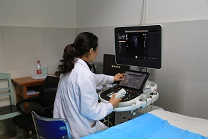

金川县人民医院始建于1947年8月的靖化卫生院，1959年6月更名为金川县人民医院，1984年医院自老街（箭道子）搬迁至金川镇（现勒乌镇）临江路20号，2017年8月迁至双柏树新区。是金川县唯一一所集医疗、教学、科研和预防保健为一体的二级综合医院。
医院占地面积43亩，建筑面积28900平方米，业务用房面积25157平方米，核定床位200张。设有内、外、妇、急诊、口腔、五官、感染性疾病等一级临床科室11个，设有检验、放射、超声、病理、药剂等7个医技科室，设有内、外、妇产、感染性疾病、重症医学、儿科和全科专业六个综合住院病区。医院拥有16排螺旋CT、数字胃肠机、双板DR、飞利浦彩超、高清电视腹腔镜、全自动检验化学发光仪、组织切片机、组织包埋机、高端麻醉机等大型医疗设备。医院编制人数164人，现有在职职工178人，其中卫生专业技术人员152人，正高2人，副高22人，中级30人。本科28人、专科125人。
2015年9月，与四川省人民医院签订了为期10年托管协议，是省人民医院在民族地区托管的第一家县级医院，同时通过“爱婴医院”复审；2017年8月，我院加入了以温江区人民医院为核心的“民族地区协作指导医院友好互助联盟”。近年来，我院在省人民医院、眉山市对口支援下，不断提升新业务，先后开展了利普刀治疗宫颈縻烂，宫颈液基细胞检查，腹腔镜胆囊切除术，胃肠造影超声新技术，微创新肛肠手术—吻合器痔环切术（PPH），远程会诊系统，微生物实验室，消化道造影，静脉肾盂造影，CT三维重建等新项目，医疗技术服务和管理水平明显提升。于2017年9月顺利完成了二甲医院的创办。
我院将于2017年10月18——22日启动整体搬迁项目，这是金川县重点民生项目，在县委、县政府正确领导下，历经六年建设，一座功能设施齐全，宽敞明亮美观的现代化医院已经建成。县医院搬迁后，医疗环境将会很大改善，我院将竭诚为全县人民提供更高效、优质、舒适、便捷的医疗服务。
金川县人民医院于2017年9月通过四川省医院等级评审委员会专家评审，2018年2月被四川省卫生和计划生育委员会正式批准为国家二级甲等综合医院。
Copyright 2018, 版权所有 金川县人民医院
健康咨询热线：400-0000-0000
联系地址：金川县金川镇临江路20号
网站备案：蜀ICP备-18029635号